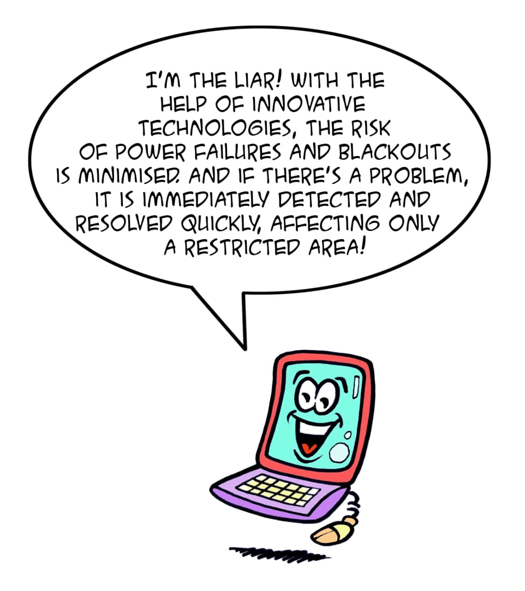

Moving Towards a Smart Grid
Some of these applications are already widespread. For example, with the time-bracket mechanism, you can allow people to pay less for their energy when it is generally less used, i.e. at night, and you can give incentives to the producers in the peak hours. Smart meters, which use remote reading and permit the access in real time to consumption data, are now also familiar devices.
And others are becoming more widespread… A few examples?
The reorganisation of the grid and the creation of charging points will also make way for large-scale use of energy from renewable sources thanks to electric mobility: the batteries of electric cars can absorb and use production peaks from non-programmable sources.
In short, the development of smart grids will provide an important contribution to making our cities more ecological and smart, and will enable us to participate more actively in the fight against climate change.
|  |
Solution |